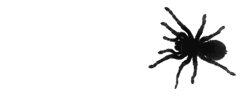

En este tema construiremos una araña.

Vamos a construir una araña con 4 patas y un solo motor.
Lo único que tiene que hacer nuestra araña es moverse en ambos sentidos.
A continuación, mostraremos un ejemplo de construcción de una araña de 4 patas.

Le añadimos el cablea al bloque EV3 y tendremos la araña terminada.
Para probar la araña, no es necesario programarlo, lo haremos con el bloque como ya hemos hecho anteriormente.
Desde la pantalla de "Ejecutado Recientemente" vamos a la pantalla de "Aplicaciones", donde seleccionamos
"Motor Control" y nos aparecerá con qué botones manejar cada uno de los motores.
Ya podemos probar la maquinaria del percutor.